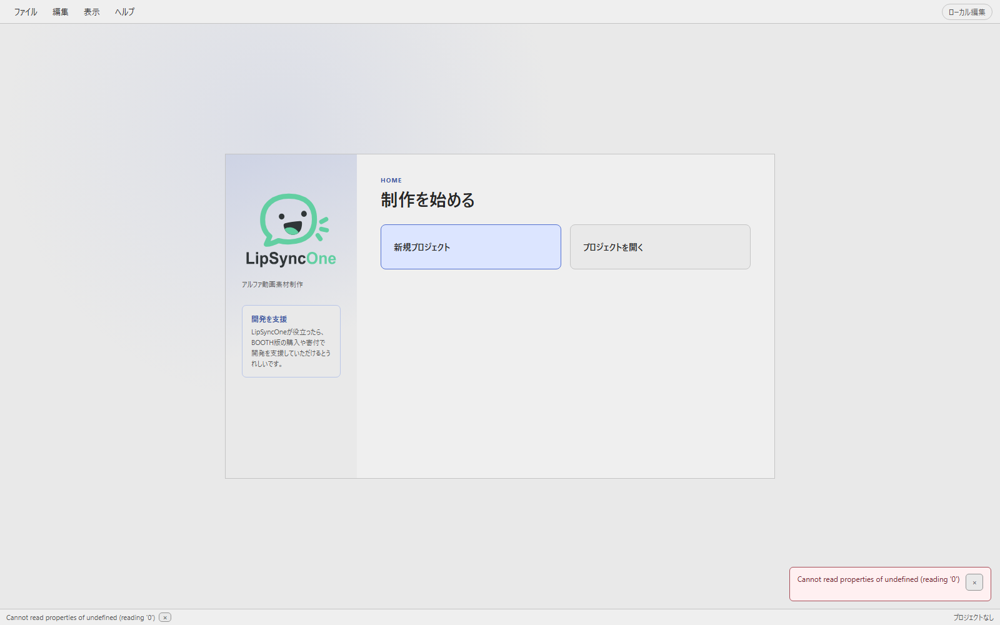
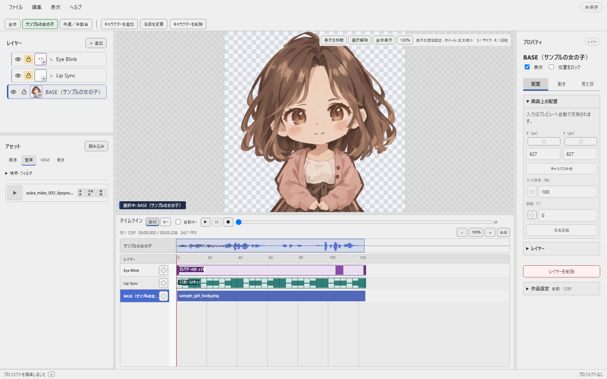
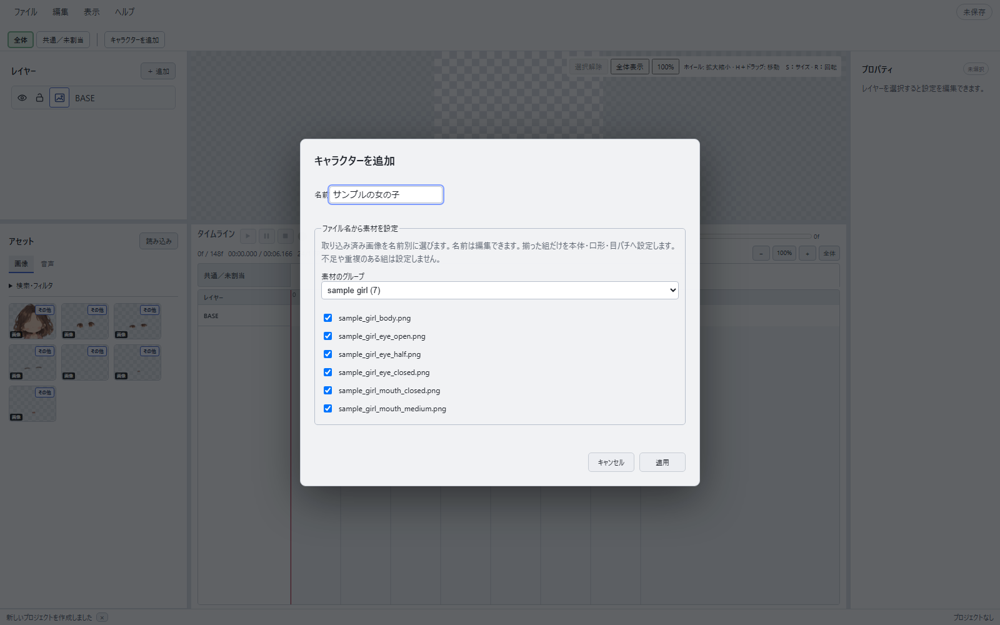
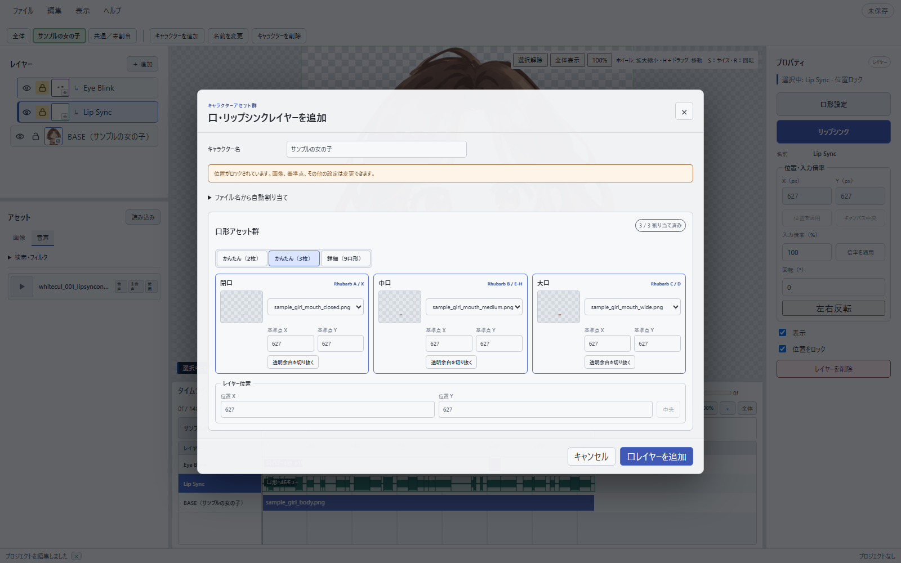
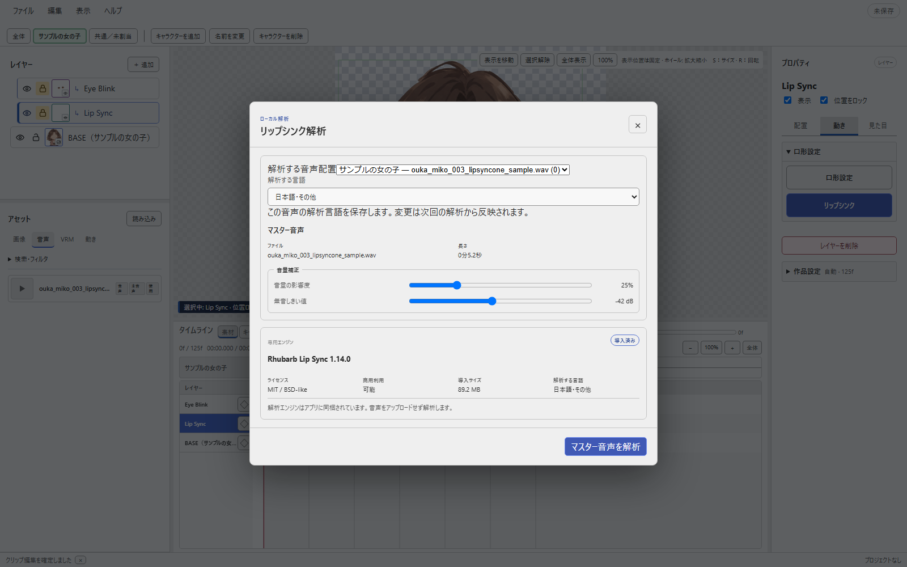
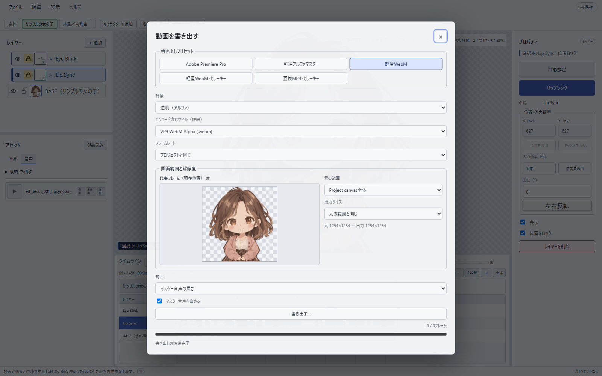

LipSyncOne ヘルプ
画像と音声を読み込み、口パク・目パチ付きの透明動画を書き出すまでの操作を紹介します。
Windows 11 x64 ／ 0.3.0の現行画面に対応 ／ 2026年10月12日更新
01
インストール
| 配布形式 | 使いかた | 向いている用途 |
|---|---|---|
| Microsoft Store版 | Storeで提供されている場合は、Storeからインストール・更新 | Storeで管理する（公開状況はStoreで確認） |
| 公式サイト・BOOTH版 | セットアップEXEを実行し、スタートメニューから起動 | 通常はユーザーごとのアプリ領域へインストール |


画像は過去の自己署名版の表示例です。現在のBOOTH版では発行元の表示が異なる場合があります。画像を選ぶと原寸で確認できます。
スマート アプリ コントロールでブロックされる場合
Windows 11の「スマート アプリ コントロール」がオンの場合、LipSyncOneの起動やインストールがブロックされることがあります。これは上のSmartScreenとは別の保護機能です。
悪意のあるアプリに加え、安全性を十分に判断できず、有効な署名も確認できないアプリをブロックします。そのため、署名のない個人開発アプリや、自己署名で配布されるアプリなども対象になる場合があります。ブロックされたことだけで、直ちに危険なアプリと確定したわけではありません。ただし、安全を保証する表示でもないため、入手元とファイルを確認してください。
- Windows セキュリティを開くスタートメニューで「Windows セキュリティ」を検索して開きます。
- 設定画面へ進む「アプリとブラウザー コントロール」→「スマート アプリ コントロールの設定」を選びます。
- 「オフ」を選ぶ表示される注意事項を読み、変更する場合は「オフ」を選びます。その後、アプリの起動またはインストールをやり直します。

最近のWindows更新では、クリーンインストールなしで再度オンにできるようになっています。再有効化の可否はWindowsの更新状況や設定によるため、変更前にお使いのPCの表示を確認してください。Microsoft Defenderなど、ほかのウイルス対策機能を無効にする必要はありません。
参考：Microsoft公式：スマート アプリ コントロールに関するよく寄せられる質問（2026年9月13日確認・閲覧にはインターネット接続が必要です）。
02
サンプルで動画を作ってみる
初めて使う方は、無料サンプルアセットを使うと、画像の準備から始めずに口パクと目パチを試せます。ZIPを展開してから、次の順に進めてください。
- 新しいプロジェクトを作るHOMEで新規プロジェクトを作成します。
- 画像と音声を読み込むimagesフォルダーのPNG 7枚と、audioフォルダーのWAVを「アセット」へ読み込みます。
- キャラクターを追加する「キャラクターを追加」を開き、「素材のグループ」でsample_girlを選びます。名前と画像を確認し、「適用」を押します。
- 音声を配置する追加したキャラクターのタブを選び、アセットの「音声」からWAVをタイムラインの音声行へドラッグします。配置後に口パクの解析が始まります。
- 再生して確認する解析が終わったらタイムラインを再生します。必要に応じて画像の位置や大きさを調整します。
- 動画を書き出す「ファイル → 動画を書き出す」を開き、透明背景のまま「軽量WebM」などで保存します。


サンプル音声はVOICEVOX:WhiteCULです。音声を使った動画を公開する際は、動画内や概要欄に「VOICEVOX:WhiteCUL」と表記してください。詳しい利用条件はZIP内のREADMEをご確認ください。
03
画面の見方


- レイヤー
- 画像の重なり順、表示・非表示、位置のロックを管理します。
- アセット
- 読み込んだ画像と音声を表示します。素材を選び、目的のレイヤーや音声行へ配置します。
- プレビュー
- 画像の重なりや口・目の動きを確認します。市松模様の部分は透明です。
- タイムライン
- 画像と音声を表示・再生する時間を調整します。
- プロパティ
- 選択中の画像、レイヤー、クリップの設定を編集します。
パネルの境界をドラッグすると、表示領域の広さを変えられます。タイムラインを広げてプレビューを小さくすることもできます。元に戻す場合は「表示 → パネル配置を初期化」を選びます。
04
素材を読み込む
画像はPNG・JPEG、音声はWAV・MP3を読み込めます。背景を透明にしたい画像は、透明度を持つPNGで用意してください。「アセット」の「読み込み」ボタンから追加できます。
読み込んだ素材は、まずアセットに登録されます。画像はレイヤーへ、音声はキャラクターの音声行へ配置すると、プレビューや再生に使われます。音声の左にある再生アイコンでは、配置前に音を確認できます。
「検索・フィルタ」を開くと、名前や使用状況で素材を絞り込めます。素材を広く見たいときは閉じて使えます。
画像の名前を揃える
同じキャラクターの画像には、同じ名前の接頭辞を付けます。たとえばsample_girl_body.pngとsample_girl_mouth_closed.pngは、同じ素材グループとして選べます。
| 割り当て | 対応ファイル名 | 必要な組 |
|---|---|---|
| BASE | {名前}_body.png | 1枚 |
| 口形・かんたん2枚 | {名前}_mouth_closed.png{名前}_mouth_open.png | 2枚すべて |
| 口形・かんたん3枚 | {名前}_mouth_closed.png{名前}_mouth_medium.png{名前}_mouth_wide.png | 3枚すべて |
| 口形・詳細9枚 | {名前}_mouth_A.png〜{名前}_mouth_H.png{名前}_mouth_X.png | A〜H/Xの9枚すべて |
| 目・2枚 | {名前}_eye_open.png{名前}_eye_closed.png | 2枚すべて |
| 目・3枚 | {名前}_eye_open.png{名前}_eye_half.png{名前}_eye_closed.png | 3枚すべて |
区切りには「_」をおすすめします。大文字・小文字は区別しません。キャラクターの追加画面で、使う画像にチェックを付けてください。画像が足りない場合や同じ役割が重複する場合は、該当する組を設定できません。
元のファイルを編集したとき
画像や音声を別のソフトで編集して保存すると、アプリが変更を自動で読み直します。すぐに更新したいときは「ファイル → アセットを再読み込み」を選びます。音声の内容が変わった場合は、波形と口パクも更新されます。
保存途中で一時的に読み込めない画像は、直前の表示を保ちながら再読み込みを待ちます。素材を移動・削除した場合は、元の場所へ戻すか、アセットのファイルを差し替えてください。
05
キャラクターを追加する


- 画像を読み込む本体と、口・目の差分画像をアセットに追加します。
- 素材のグループを選ぶ「キャラクターを追加」を開き、画像の名前に対応するグループを選びます。
- 名前と画像を確認する名前は自由に変更できます。使う画像を確認して「適用」を押します。
- 音声を配置するそのキャラクターのタブを選び、対応する音声を配置します。
複数人が話す動画では、話者ごとにキャラクターと音声を用意します。異なる音声行は同時に再生できます。同じ音声行ではクリップを重ねられません。
「全体」タブでは全員の配置をまとめて確認できます。「共通／未割当」は、特定のキャラクターに属さない背景や小物などに使います。タブを切り替えても、他のキャラクターが自動で非表示や消音になることはありません。
同名のレイヤーは「BASE（キャラクター名）」のように区別して表示します。音声の所属を変える場合は、現在の配置を削除し、目的のキャラクターの音声行へ配置し直します。元の音声アセットは残ります。
録音は「編集 → 録音…」から始められます。録音した音声を素材として保存してから、目的の音声行へ配置してください。
06
口形画像を設定する
キャラクターのタブを選び、レイヤー欄の「＋追加 → 口・リップシンク」を開きます。設定済みの口レイヤーを選び、プロパティから開くこともできます。


| 設定 | 必要な画像 | 用途 |
|---|---|---|
| かんたん（2枚） | 閉口、開口 | 閉じる・開くを切り替える |
| かんたん（3枚） | 閉口、中口、大口 | 開き具合を3段階で表現する |
| 詳細（9口形） | A〜H、X | Rhubarb標準の口形を個別に描く |
Rhubarb A〜H/Xの意味
A〜H/Xは開き具合の順番ではなく、音声から選ばれる発音別の口形記号です。
| 口形 | 形の目安 | 主な音 |
|---|---|---|
| A | 唇を閉じる。休止口より少し力を入れる | P / B / M |
| B | 歯を閉じ、口を少し開く | K / S / T、EE |
| C | 口を開く。大口形への中間にも使う | EH / AE |
| D | 口を大きく開く | AA |
| E | 口を少し丸める。すぼめ口への中間にも使う | AO / ER |
| F | 唇をすぼめる | UW / OW / W |
| G | 上の歯を下唇へ当てる | F / V |
| H | 舌を上の歯の後ろへ上げる | L |
| X | 力を抜いて口を閉じる休止形 | 無音・発話の間 |
かんたん2枚ではA/Xを閉口、B〜Hを開口へまとめます。かんたん3枚では9口形を閉口・中口・大口へ自動で振り分けます。
07
口パクを解析・調整する
口形画像を設定したキャラクターの音声行へ音声を配置すると、自動解析が始まります。解析が終わると、声に合わせて口形が切り替わるようになります。


あとから調整する
- 口レイヤーを選ぶ対象キャラクターの口レイヤーを選択します。
- 解析画面を開くプロパティの「リップシンク」を押します。
- 補正を調整する「音量の影響度」の初期値は25％、「無音しきい値」は−42 dBです。小さい声で口が開きすぎる場合は、影響度やしきい値を少し上げて試します。
- 解析して適用する「マスター音声を解析」を押します。解析が終わると、結果がタイムラインに反映されます。
自動解析中は進捗が表示され、キャンセルできます。解析に失敗しても音声の配置は残るので、設定を確認して再解析してください。
解析エンジンのRhubarbと必要なデータはアプリに同梱しています。解析のために音声を外部へ送信しません。
08
目パチを設定する
開いた目と閉じた目の2枚で目パチを付けられます。半閉じの画像も用意すると、まばたきの途中を表現できます。キャラクター追加でまとめて設定するか、「＋追加 → 目・目パチ」から設定します。
- 平均間隔
- まばたきする間隔を秒で指定します。
- ランダム幅
- 間隔にばらつきを加えます。
- 閉眼時間
- 目を閉じている長さをフレーム数で指定します。
- パターン変更
- 間隔の設定を保ちながら、まばたきのタイミングを変えます。
口と目のレイヤーは、初期状態では位置がロックされています。位置を調整するときは鍵アイコンで解除してください。倍率や回転、目パチの設定は、位置がロックされていても変更できます。
09
タイムラインと画像の位置を調整する

音声を配置・移動・削除すると、タイムラインの長さが音声の終わりに合わせて伸び縮みします。手動で配置した画像などが後ろにある場合は、その表示範囲も残ります。
位置・大きさ・回転
画像またはレイヤーを選ぶと、プロパティに位置・入力倍率・回転が表示されます。数値を入力すると、入力が止まってから少し待ってプレビューに反映されます。Enterを押すとすぐに確定します。
位置は1px、倍率は1％、回転は1度刻みで入力できます。数値欄にマウスを置いてホイールを動かすと、1ずつ変更できます。「左右反転」で画像を反転できます。
| 操作 | 方法 |
|---|---|
| マウスで拡大・縮小 | プレビューで画像を選び、マウスをプレビュー上に置いてSを押してから動かします。 |
| マウスで回転 | 画像を選び、Rを押してからマウスを動かします。 |
| 変形を確定・取り消す | クリックまたはEnterで確定。右クリックまたはEscで取り消します。 |
| プレビューを拡大・縮小 | プレビュー上でホイールを動かします。「全体表示」で画像全体が収まります。 |
| プレビューの表示位置を動かす | Hを押しながらドラッグします。 |
| 表示・非表示 | レイヤーの目アイコンで切り替えます。 |
| 名前・重なり順 | レイヤー名のダブルクリックで名前を変更。行を上下へドラッグして順番を変えます。 |
| 音量 | 音声クリップを選び、プロパティのゲインを調整します。 |
BASEはキャラクター本体のレイヤーです。口と目はBASEに追従します。背景は通常レイヤーで用意し、キャラクターより下へ配置してください。
10
保存とバックアップ
「ファイル → 保存」で、編集内容を.ls1ファイルに保存します。画像や音声は外部ファイルを参照するため、通常の保存では素材そのものを.ls1に埋め込みません。
別のPCへ移すとき
「ファイル → プロジェクトを収集して保存」を選ぶと、.ls1と使用中の素材をまとめたフォルダーが作られます。そのフォルダー全体を移動してください。
通常の.ls1を使う場合は、素材の場所と名前を維持してください。素材が見つからなくなったときは元の場所へ戻すか、アセットのプロパティからファイルを差し替えます。
0.2.0以降は現在の保存形式に対応しています。それより古い形式のプロジェクトは、作成した当時のアプリで開いてください。
11
透明動画を書き出す
「ファイル → 動画を書き出す」、またはCtrl＋Eで書き出し画面を開きます。初期設定は「軽量WebM」、背景は「透明（アルファ）」です。


| 用途 | 形式 | 使い分け |
|---|---|---|
| Adobe Premiere Pro | ProRes 4444 Alpha / MOV | 動画編集ソフトへ渡す編集用素材 |
| 可逆アルファマスター | FFV1 / MKV | 劣化を抑えて保管するマスター素材 |
| 軽量WebM | VP9 Alpha / WebM | 透明度を保ちながら容量を抑える |
| 互換MP4・カラーキー | H.264 / MP4 | 背景色を付けた確認用動画。透明度は保持しません。 |
仕上げ先の動画編集ソフトが、選んだ形式の透明度に対応しているか確認してください。アルファ付き素材をWindows標準のプレイヤーで再生できない場合でも、編集ソフトでは読み込めることがあります。
12
アプリを更新する
「ヘルプ → アップデートを確認」で新しい安定版を確認できます。プロジェクトを保存して「更新して再起動」を選ぶと、署名を確認したインストーラーで更新します。取得中は取消できます。0.2.3以前のポータブル版からは、旧アプリを終了して0.3.0のセットアップEXEを実行してください。保存済みの.ls1と素材はそのまま使えます。
Rhubarbの解析エンジンと必要なデータはアプリに同梱しているので、初回の追加ダウンロードは不要です。
BOOTHの購入者証明ファイル（.lso-license）は「ヘルプ → 購入状態」から読み込みます。Store版の購入状態と更新はStore側で管理します。
13
よく使うショートカット
| Ctrl＋S | 保存 | Ctrl＋E | 動画の書き出し |
|---|---|---|---|
| Ctrl＋Z | 元に戻す | Ctrl＋Shift＋Z | やり直す |
| Space | タイムラインの再生・一時停止 | S / R | 選択画像の拡大縮小 / 回転 |
| H＋ドラッグ | プレビューの表示位置を移動 | Enter / Esc | 変形を確定 / 取り消す |
| Ctrl＋C / V | クリップをコピー / 貼り付け | Ctrl＋K | このヘルプ内を検索 |
S / Rは、画像を選んでプレビュー上へマウスを置いたときに使えます。数値や文字の入力中は、画像の変形を始めません。
14
困ったときは
Windowsが実行を止める
公式Releaseから取得したファイルであることを確認します。BOOTH版はWindowsの実行ファイル署名を付けていないため、SmartScreenが表示される場合があります。インストール欄の画面例に沿って「詳細情報」を開き、アプリ名と発行元を確認してください。
音声や画像を読み込んでもタイムラインに出ない
読み込みはアセットへの登録だけを行います。画像は対象レイヤーへ、音声は対象キャラクターの音声行へドラッグしてください。
音声が再生できない・波形が出ない
音声がタイムラインの音声行へ配置されているか確認してください。ファイルを移動・改名した場合は、元の場所へ戻すかファイルを差し替えます。再生操作の横にエラーが表示された場合は、その内容を確認して再試行してください。
リップシンク解析を開始できない
対象キャラクターの音声行にクリップがあり、そのキャラクターの口レイヤーへ口形画像が設定されているか確認します。同梱エンジンが見つからないと表示される場合は、アプリを再インストールしてください。
無音に近い区間でも口が開く
解析画面で無音しきい値を上げるか、音量の影響度を上げて再解析します。特に2枚・3枚口形で効果があります。
口や目が表示されない
専用レイヤーの目アイコン、画像割り当て、位置、現在フレームにBASEクリップがあるかを確認します。BASEがない区間では従属する口と目も表示されません。
音声の最後がフレーム境界と合わない
音声はフレームで切り捨てず、元の最終サンプルまで保持します。タイムラインのバー端がフレーム線の途中になるのは正常です。
BGMやサブ音声を重ねられる？
異なるキャラクターの音声行は同時再生できます。同じ音声行のクリップは重ねられません。BGMの加工や音声エフェクトなどはPremiere Proなどの仕上げ先で行ってください。
アルファ動画をWindows標準プレイヤーで再生できない
標準プレイヤーがProRes 4444やFFV1のアルファへ対応しない場合があります。編集ソフトへ直接読み込むか、確認用のカラーキーH.264 MP4を書き出してください。
別のPCで素材が見つからない
通常保存の.ls1には素材そのものを含めません。元のPCで「プロジェクトを収集して保存」を実行し、作成されたフォルダー全体を移動してください。
解決しない場合
一般的な質問や不具合はマシュマロから送れます。アプリとWindowsのバージョン、再現手順、表示されたメッセージがあると確認しやすくなります。公開できない音声・画像や個人情報は送らないでください。技術情報を公開して報告したい場合はGitHub Issuesも利用できます。
該当する項目がありません。別の言葉で検索してください。